ГОСУДАРСТВЕННЫЙ КОМИТЕТ СССР ПО ДЕЛАМ
СТРОИТЕЛЬСТВА
(ГОССТРОЙ СССР)
СТРОИТЕЛЬНЫЕ НОРМЫ И ПРАВИЛА
СНиП II-94-80
НОРМЫ ПРОЕКТИРОВАНИЯ
ЧАСТЬ II
ПОДЗЕМНЫЕ ГОРНЫЕ ВЫРАБОТКИ
ГЛАВА 94
Утверждены
постановлением Государственного комитета СССР
по делам строительства
от 31 декабря 1980 г. № 232
МОСКВА 1982
Глава СНиП II-94-80 «Подземные горные выработки» разработана институтами Центрогипрошахт, ВНИМИ и ВНИИОМШС Минуглепрома СССР с участием институтов Южгипрошахт Минуглепрома СССР, Гипроцветмет и Гипроникель Минцветмета СССР, Кривбасспроект Минчермета СССР и ВНИИГ Минхимпрома.
С введением в действие настоящей главы утрачивают силу:
глава СНиП II-М.4-65 «Подземные горные выработки предприятий по добыче полезных ископаемых»;
изменение главы СНиП II-М.4-65 «Подземные горные выработки предприятий по добыче полезных ископаемых», внесенное постановлением Госстроя СССР от 31 января 1978 г. № 13.
Редакторы: д-р техн. наук Е. В. Петренко, канд. военных наук П. М. Кузьмин и инж. В. П. Бовбель (Госстрой СССР), канд. техн. наук Е. В. Стрельцов (Минуглепром СССР), канд. техн. наук В. М. Еремеев и инж. К. Я. Зотова (Центрогипрошахт Минуглепрома СССР), доктора техн. наук К. А. Ардашев и Н. А. Филатов (ВНИМИ Минуглепрома СССР), канд. техн. наук И. Г. Косков (ВНИИОМШС Минуглепрома СССР).
|
Государственный комитет СССР |
Строительные нормы и правила |
СНиП II-94-80 |
|
Подземные горные выработки |
Взамен |
1.1. Настоящие нормы должны соблюдаться при проектировании подземных горных выработок для новых, реконструируемых и расширяемых действующих предприятий по добыче полезных ископаемых.
Нормы распространяются на проектирование подземных горных выработок, располагаемых в зоне и вне зоны влияния очистных работ.
|
Внесены |
Утверждены |
Срок введения |
Примечания: 1. Настоящие нормы не распространяются на проектирование подземных горных выработок, сооружаемых на глубине более 1500 м или специальными способами проходки, а также очистных выработок и располагаемых в пределах выемочных участков, выработок выщелачивания и предприятий подземной газификации.
2. Подземные горные выработки в последующем тексте именуются «выработки».
1.2. Выработки следует проектировать на основе:
данных, определяющих назначение, срок службы, условия возведения и эксплуатации выработок;
результатов инженерных изысканий, включающих данные инженерно-геологического изучения мест размещения выработок;
требований нормативных документов, утвержденных или согласованных Госстроем СССР, государственных стандартов, законодательных актов по экономии земель, охране и рациональному использованию недр и природных ресурсов, а также правил безопасности, утвержденных Госгортехнадзором СССР, и требований органов государственного санитарного надзора СССР.
1.3. Проектирование выработок предприятий по добыче полезных ископаемых должно производиться исходя из условий снижения трудоемкости, материалоемкости и сметной стоимости строительства и применения широкой механизации горнопроходческих работ, а также в соответствии с требованиями «Инструкции по разработке проектов и смет для промышленного строительства» с учетом особенностей шахтного и горнорудного строительства:
а) разработка нескольких вариантов размещения, компоновки и взаимной увязки выработок с учетом их назначения, условий сооружения и эксплуатации, включая вопросы вентиляции, водоотлива и транспорта, технологии и организации строительства, предусматривая в каждом варианте максимально возможную прямолинейность выработок и минимальное количество типоразмеров сечений выработок, а также трудоемких в проведении сопряжений, заездов и приемных площадок;
б) проведение расчетов для каждого из вариантов по определению устойчивости пород выработок, формы и размеров их поперечного сечения, расстояния между выработками, величин смещения пород и нагрузок на крепь, конструкций и параметров крепи с учетом мер охраны и защиты выработок, способов их сооружения и с использованием действующих типовых проектов выработок, отвечающих требованиям настоящих норм;
в) технико-экономическое сравнение показателей вариантов и принятие на их основе оптимального решения по минимальным суммарным затратам при строительстве и эксплуатации выработок с учетом наиболее целесообразного использования недр.
Объемно-планировочные и конструктивные решения выработок должны учитывать опыт их сооружения в аналогичных горно-геологических и гидрогеологических условиях, применение передовой технологии и организации горнопроходческих работ и обеспечивать эксплуатацию выработок в течение установленного проектом срока их службы.
Проектирование выработок, пригодных к дальнейшему использованию после извлечения из недр полезного ископаемого, следует производить в соответствии с настоящими нормами с учетом требований «Инструкции по проектированию народнохозяйственных объектов, размещаемых в отработанных горных выработках».
1.4. Проектирование выработок при условиях наличия опасности горных ударов, самовозгорания угля, выбросов, угля, породы и газа, динамических воздействий, сейсмичности района свыше 7 баллов, повышенной температуры горных пород, в зоне вечной мерзлоты и др. должно производиться с учетом дополнительных требований, предусмотренных для таких случаев общесоюзными и ведомственными документами или на основе результатов исследований, выполненных специализированными организациями.
1.5. При проектировании временных (на период строительства) выработок необходимо соблюдать требования, предъявляемые к постоянным выработкам того же назначения, согласно настоящим нормам. При этом предусматривать максимальное использование временных выработок при дальнейшей эксплуатации предприятия по добыче полезных ископаемых.
1.6. В составе проектов особо ответственных выработок, нарушение которых ведет к остановке всего предприятия, для контроля их состояния следует предусматривать установку контрольных приборов и замерных станций.
1.7. Проекты вентиляции и кондиционирования воздуха, водоотлива, электроснабжения и подземного транспорта на предприятиях по добыче полезных ископаемых должны разрабатываться в соответствии с нормами технологического проектирования и другими отраслевыми нормативными документами, утвержденными в установленном порядке.
1.8. Инженерные изыскания для проектирования и строительства выработок следует выполнять в соответствии с требованиями главы СНиП по инженерным изысканиям для строительства, а также с учетом особенностей подземного строительства, предусмотренных настоящими нормами.
1.9. Исходные инженерно-геологические материалы для проектирования выработок должны включать следующие данные:
геоморфологию места намечаемого расположения проектируемой выработки, включая стратиграфию и тектонику массива горных пород, а при необходимости и топографию земной поверхности;
литологическую характеристику пород массива;
результаты испытаний механических свойств пород массива;
гидрогеологическую характеристику массива, характеристику его газоносности и при необходимости геокриологические данные.
Степень детальности перечисленных исходных данных должна повышаться путем уплотнения сетки разведочных скважин по мере приближения к месту расположения проектируемой выработки.
1.10. Исходные данные для проектирования выработок получаются путем:
использования имеющихся фондовых данных о результатах проведенной геологической разведки (предварительной, детальной, доразведки) и маркшейдерско-геодезических съемок;
проведения геологических, гидрогеологических и других работ инженерно-геологических изысканий, включая бурение инженерно-геологических скважин непосредственно в местах предполагаемого расположения проектируемых выработок.
При проведении инженерных изысканий должно предусматриваться бурение:
вертикальных контрольно-стволовых скважин для каждой проектируемой вертикальной выработки;
вертикальных или наклонных скважин по осевым линиям горизонтальных и наклонных магистральных выработок;
горизонтальных опережающих скважин в направлении проектируемых выработок вкрест простирания массива пород.
1.11. Стратиграфические и тектонические данные сложения массива горных пород, а также данные об их литологическом составе должны устанавливаться в основном из имеющихся материалов геологической разведки по сетке скважин и по скважинам, размещенным вблизи мест расположения вскрывающих выработок.
Эти данные контролируются и уточняются по результатам геологических работ инженерных изысканий.
Указанные данные должны содержать привязанные к маркшейдерской сети параметры залегания (глубина, мощность, угол падения, азимуты простирания, выдержанность) всех литологически различающихся пластов, слоев и других морфологических элементов, а также сведения о подработке горного массива, его сдвижениях и деформациях.
Литологическая характеристика пород должна быть дана для пластов (слоев) в интервале и с детальностью, указанными для стратиграфических и тектонических данных. Эта характеристика должна включать установление типа и наименования пород с учетом имеющихся на месторождении (в бассейне) классификаций литогенетических типов пород, а также характеристик, определяющих этот тип. Тщательно и подробно должны быть установлены параметры залегания, а также вещественного состава и структурной нарушенности слабых слоев и прослоев, склонных к выдавливанию и пучению, а также контактов морфологических элементов с малой степенью связности (зеркала скольжения, трещины, разрывы и др.).
Материалы инженерно-геологических изысканий должны содержать данные о тампонаже разведочных скважин, а также о наличии и состоянии ранее пройденных выработок.
1.12. Физико-механические свойства и структурная нарушенность пород должны определяться в интервалах по мощности залегания:
до 20 м выше и до 10 м ниже горизонта намечаемого расположения выработки - детально для всех слоев, пластов, прослоев мощностью свыше 0,3 м и для литотипов слоев мощностью от 0,1 до 0,3 м;
от 20 до 100 м выше и от 10 до 30 м ниже горизонта намечаемого расположения выработки - укрупненно для представителей всех имеющихся литотипов пород слоев мощностью свыше 1 м.
Для вертикальных контрольно-стволовых скважин детальное изучение физико-механических свойств и структурной нарушенности пород должно быть выполнено по всему интервалу бурения.
Для всех изученных слоев, пластов, прослоев и прочих морфологических элементов должны быть выполнены механические испытания керновых проб и установлены средину значения сопротивления пород одноосному сжатию, а также плотности, естественной влажности, коэффициента сцепления, угла внутреннего трения, модуля упругости, коэффициента Пуассона.
1.13. Гидрогеологические, а при необходимости криологические данные должны устанавливаться в основном по имеющимся материалам геологической разведки по сетке скважин. Эти данные контролируются и уточняются результатами дополнительных гидрогеологических работ по скважинам инженерных изысканий.
Гидрогеологические данные должны содержать сведения о расположении и мощности водоносных горизонтов, степени обводненности пород в местах предполагаемого размещения проектируемых выработок, гидростатических и гидродинамических напорах, характеристике химической агрессивности вод, расположении и характеристике водоупоров, условиях питания и дренажа водоносных горизонтов, показателя их фильтрационной способности и связи с поверхностными водотоками и водоемами, расположении и характеристике карстов и плывунов.
Криологические данные должны содержать сведения о расположении, конфигурации и размерах многолетнемерзлых частей массива горных пород, характеристике их льдистости и влажности и показателях механических свойств при оттаивании и замораживании, показателях теплопроводности пород массива, сведениях о тепловом поле и геотермическом градиенте, характеристике изменения границ промерзания в результате действия сезонно-климатических и гидрогеологических факторов.
2.1. Выбор места размещения выработки следует производить с учетом устойчивости окружающих ее пород, а также общих компоновочных решений всего комплекса выработок на предприятии по добыче полезных ископаемых; при этом следует избегать заложения выработки непосредственно в местах тектонической нарушенности массива, карстов, плывунов.
2.2. Форма и размеры поперечного сечения выработки должны обеспечивать заданную пропускную способность в условиях сооружения и эксплуатации, размещения в ней оборудования, санитарно-технических устройств и инженерных коммуникаций, а также соблюдение необходимых требований подземного транспорта, вентиляции и водоотлива.
При расчете проектного сечения выработки в проходке (вчерне) кроме толщины крепи и забутовочного материала надлежит учитывать определяемые по настоящим нормам величины смещения пород, происшедшие при применении жесткого типа крепи - за период до ее возведения, податливой - за весь срок эксплуатации выработки либо за период до исчерпания податливости крепи.
2.3. Для улучшения условий поддержания и обеспечения рабочего состояния выработок следует располагать их по возможности в устойчивых породах, а при необходимости применять горные меры охраны и конструктивные меры защиты выработок и крепи.
К горным мерам охраны и конструктивным мерам защиты относятся:
оставление предохранительных целиков, исключающих влияние очистных работ;
расположение выработок на расстояниях, исключающих их взаимное влияние;
рациональный порядок ведения горных работ;
расположение выработок в предварительно разгруженной области массива;
механизированная закладка закрепного пространства;
предварительное либо последующее упрочнение массива пород;
уменьшение концентрации напряжении за счет различных методов разгрузки массива;
применение тампонажа закрепного пространства;
использование податливых типов крепи и элементов податливости, а в соляных породах - оставление зазоров между крепью и породой.
Горные меры охраны и конструктивные меры защиты выработки следует назначать на основе результатов сравнения ожидаемых деформаций массива горных пород с допускаемыми величинами деформаций крепи.
2.4. Выбор конструкции, параметров и расчет крепи выработки должен производиться дифференцировано по участкам пород с одинаковыми свойствами исходя из оценки устойчивости пород, величин их смещений, нагрузок на крепь, с учетом возможности комплексной механизации процессов изготовления и возведения крепи, обеспечения надежности и безопасности работ в течение всего срока службы выработки.
Проектирование крепи выработок должно включать:
определение характера проявления горного давления;
выбор типа крепи и технологии ее возведения;
прогноз смещения контура пород и расчет нагрузок;
выбор конструктивной схемы крепи и ее расчет.
При выборе конструкции и параметров крепи следует также соблюдать предъявляемые к крепи особые требования, связанные с дополнительными воздействиями на нее динамических нагрузок, агрессивных подземных и грунтовых вод, а также обеспечения водо- и газоизоляции выработок.
2.5. При проектировании крепи выработок, а также других элементов подземных конструкций (армировка стволов, фундаменты под оборудование и др.) должна предусматриваться их защита от воздействия агрессивных сред.
Установление степени агрессивности сред, а также меры по защите от их воздействий следует назначать в соответствии с требованиями главы СНиП по защите строительных конструкций от коррозии и ГОСТ 9.015-74.
2.6. Проектами выработок, возводимых в обводненных массивах пород, надлежит предусматривать защиту от проникновения в выработку воды путем водоотвода, гидроизоляции крепи и тампонажа пород.
Применение перечисленных мероприятий, а также создание специальной водонепроницаемой крепи следует производить на основе технико-экономического обоснования.
2.7. Выбор материалов конструкции крепи необходимо производить в соответствии с требованиями нормативных документов и государственных стандартов, предъявляемыми к материалам с учетом их работы в подземных условиях.
2.8. В конструкциях монолитной бетонной и железобетонной крепи шахтных стволов следует применять тяжелый бетон марки не ниже М200, для других выработок не ниже М150; для сборных железобетонных и бетонных конструкций крепи бетон следует применять марки не ниже М300.
2.9. Проектные марки бетона по морозостойкости и водонепроницаемости следует назначать с учетом принятой системы гидроизоляции или защиты крепи от коррозии в зависимости от климатических и гидрогеологических условий района расположения выработки и в соответствии с классификацией бетонов и требованиями к их применению, установленными для I класса сооружений главой СНиП по проектированию бетонных и железобетонных конструкций, а также в соответствии с главой СНиП по защите строительных конструкций от коррозии.
2.10. Минимальную толщину защитного слоя бетона для арматуры монолитной железобетонной крепи следует принимать 30 мм.
2.11. Элементы блочной и тюбинговой сборной крепи должны иметь отверстия для тампонажа пустот, остающихся за крепью в процессе ее монтажа.
2.12. В железобетонной и бетонной крепи выработок, сооружаемых в сейсмических районах с сейсмичностью свыше 7 баллов, следует предусматривать устройство деформационных швов, расстояния между которыми должны быть до 30 м. Устройство деформационных швов следует предусматривать, как правило, в местах пересечения выработкой трещин или контактов между породами различной прочности.
2.13. В качестве основных расчетных данных для определения устойчивости пород, величин их смещений, нагрузок на крепь и параметров крепи выработки должны приниматься:
расчетная глубина размещения выработки Hр;
расчетные значения физико-механических свойств горных пород;
нормативные и расчетные характеристики материалов крепи и заполнения закрепного пространства.
2.14. Расчетную глубину Hp размещения выработки следует определять по формуле
Hp = Hk, (1)
H - проектная глубина размещения выработки или ее участка, м;
k - коэффициент, учитывающий отличие напряженного состояния массива горных пород по сравнению с напряженным состоянием, вызванным собственным весом толщи пород до поверхности, принимаемый равным 1 для обычных горно-геологических условий либо устанавливаемый экспериментально: для районов, подверженных движениям земной коры и в зонах тектонических нарушений, при отсутствии экспериментальных данных k принимается равным 1,5.
2.15. Расчетное сопротивление пород (массива) сжатию Rс следует определять по формуле
Rc = Rkc, (2)
где R - среднее значение сопротивления пород в образце одноосному сжатию, устанавливаемое экспериментально по результатам испытаний образцов пород, МПа (кгс/см2);
kc - коэффициент, учитывающий дополнительную нарушенность массива пород поверхностями без сцепления либо с малой связанностью (зеркала скольжения, трещины, глинистые прослои и др.), принимаемый по табл. 1.
Примечание. В необходимых случаях (обводнение выработки, упрочнение пород и др.) определение Rс следует производить с учетом влияния этих факторов по данным специализированных организаций.
2.16. При проектировании выработок kc определяется по данным количественного анализа нарушенности массива пород в местах проектируемого расположения выработки на основании данных инженерно-геологических изысканий по среднему расстоянию между поверхностями ослабления пород согласно табл. 1.
Таблица 1
|
Коэффициент kc |
|
|
Более 1,5 |
0,9 |
|
От 1,5 до 1 |
0,8 |
|
От 1 до 0,5 |
0,6 |
|
От 0,5 до 0,l |
0,4 |
|
Менее 0,1 |
0,2 |
2.17. Для оценки ранее выполненной проектной документации и при использовании имеющихся нормативных документов допускается определять сопротивление пород сжатию в образце R по коэффициенту крепости пород f по шкале М. М. Протодьяконова (при f ³ 3) по формулам
R = 10f (МПа), (3)
R = 100f (кгс/см2) (3а)
где f - коэффициент крепости пород, принимаемый по главе СНиП по правилам производства и приемки работ подземных горных выработок
2.18. Расчетное сопротивление пород сжатию Rс по контуру поперечного сечения выработки должно определяться с учетом всех пересекаемых выработкой слоев (пластов) мощностью более 0,1 м, залегающих на расстояниях от контура сечения выработки: в кровле 1,5b, в почве и боках выработки - 1b, где b - ширина выработки.
Для ряда смежных слоев, залегающих по контуру поперечного сечения выработки, с изменчивостью Rс в пределах до 30 % следует принимать для всей выработки усредненное значение расчетного сопротивления пород сжатию, определяемое по формуле
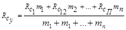
где Rc, ... RcП - расчетное сопротивление сжатию слоев пород;
m1, ... mn - мощность слоя.
При изменчивости расчетного сопротивления пород сжатию в кровле, боках или почве выработки свыше 30 %, Rс следует считать по формуле (4) отдельно по элементам выработки (кровле, боках и почве).
2.19. Расчетное сопротивление пород сжатию Rс по длине выработки следует определять, исходя из разделения выработки на отдельные участки по длине, с учетом следующих требований:
а) к одному участку следует относить все пересекаемые выработкой слои (пласты) мощностью свыше 0,3 м, значения Rс которых находятся в пределах до 30 %; для этого участка Rс определяется усредненным с учетом мощности этих слоев по формуле (4);
б) при объединении смежных участков, значения Rс которых отличаются более чем на 30 %, Rс объединенного участка следует принимать по наименьшему значению Rс объединяемых участков.
2.20. Расчетные и нормативные характеристики материалов крепи следует принимать с учетом их работы в подземных условиях и руководствуясь соответствующими государственными стандартами и главами СНиП:
для бетонной и железобетонной крепи - по главе СНиП по проектированию бетонных и железобетонных конструкций;
для металлической крепи - по главе СНиП по проектированию стальных конструкций;
для деревянной крепи - по главе СНиП по проектированию деревянных конструкций;
для каменной крепи - по главе СНиП по проектированию каменных и армокаменных конструкций.
При выборе материалов конструкций крепи выработок надлежит также соблюдать требования «Технических правил по экономному расходованию основных строительных материалов».
2.21. Расчет крепи выработки следует производить, используя методы строительной механики с учетом взаимодействия крепи и пород при строительстве и эксплуатации выработки.
При оценке взаимодействия крепи и пород необходимо учитывать мероприятия по упрочнению пород или их разгрузке, прогноз изменений геологических, гидрогеологических и горнотехнических условий участка строительства.
2.22. Расчет конструкций крепи выработки следует производить по несущей способности (по фактору хрупкого, вязкого и других видов разрушений), а в необходимых случаях по устойчивости трещиностойкости в соответствии с требованиями главы СНиП по основным положениям проектирования строительных конструкций и оснований.
На устойчивость следует проверять расчетом тонкостенные стальные и сборные конструкции, а на трещиностойкость - крепи гидро- и газоизолирующие.
2.23. Крепи выработок следует рассчитывать, исходя из возможных неблагоприятных сочетаний нагрузок и воздействий, которые действуют одновременно при строительстве или эксплуатации выработок, с учетом технологии проведения выработок и возведения крепи. При этом необходимо принимать следующие сочетания нагрузок:
основное - из постоянных нагрузок и воздействий, временных длительных нагрузок и воздействий, возникающих в процессе строительства;
особое - из постоянных, временных длительных, наиболее вероятных кратковременных и одной из особых сейсмических или других нагрузок или воздействий.
2.24. При проектировании конструкций крепи выработок на сочетание нагрузок и воздействий следует учитывать:
постоянные нагрузки и воздействия:
а) давление горных пород со стороны массива;
б) собственный вес крепи;
в) воздействия, вызываемые предварительным напряжением элементов крепи;
г) давление подземных вод;
временные длительные нагрузки и воздействия:
д) температурные воздействия, в том числе морозное пучение;
е) воздействия от очистных работ, других выработок и водопонижения;
ж) давление от набухания пород;
кратковременные нагрузки и воздействия:
з) давление тампонажного раствора, нагнетаемого за крепь;
и) воздействия от подвижных нагрузок проходческих, транспортных машин и комплексов;
к) воздействия от массовых взрывов;
особые нагрузки и воздействия:
л) динамические нагрузки;
м) сейсмические воздействия.
При учете сочетаний нагрузок следует применять коэффициенты сочетаний, установленные главой СНиП по нагрузкам и воздействиям.
2.25. Расчеты крепи по несущей способности и устойчивости следует производить на основные и особые сочетания нагрузок с применением коэффициентов перегрузки, условий работы конструкций, устанавливаемых в настоящих нормах, и расчетных сопротивлений материалов, принимаемых по соответствующим главам СНиП.
3.1. Выбор места размещения вертикальной выработки необходимо производить во взаимной увязке с генеральным планом и расположением других выработок, а также с учетом возможности наиболее полного извлечения из недр запасов основных и совместно с ними залегающих полезных ископаемых. При проектировании вертикальных выработок необходимо:
избегать, как правило, пересечения вертикальной выработкой крупных тектонических нарушений и напорных водоносных горизонтов;
располагать стволы, как правило, за пределами шахтных полей или площадей залегания полезных ископаемых на расстояниях, исключающих оставление предохранительных целиков;
предусматривать меры максимально возможной выемки околоствольных целиков при расположении стволов в пределах шахтных полей или площадей залегания полезных ископаемых:
обеспечивать возможность размещения околоствольного двора в устойчивых, прочных породах;
принимать меры, исключающие или снижающие воздействие на стволы очистных работ, водопонижения и близлежащих либо сопрягающихся выработок.
Примечания: 1. Вертикальные выработки считаются расположенными вне зоны воздействия очистных работ, если очистные выработки находятся за пределами границ предохранительных целиков, построенных по Правилам охраны сооружений и природных объектов от вредного влияния подъемных торных разработок, утвержденным министерствами СССР по согласованию с Госгортехнадзором СССР.
2. Вертикальные выработки считаются расположенными вне зоны воздействия водопонижения, если они находятся за пределами его контура, определяемого гидрогеологическим расчетом.
3.2. При расположении стволов и шурфов санитарно-защитные зоны следует предусматривать в соответствии с «Санитарными нормами проектирования промышленных предприятий».
3.3. Вертикальные стволы следует проектировать, как правило, круглого поперечного сечения. Другим вертикальным выработкам, в зависимости от срока их службы, назначения и горно-геологических условий, допускается придавать отличную от круглой форму поперечного сечения.
3.4. При охране стволов и шурфов предохранительными целиками размеры последних следует назначать в соответствии с действующими нормативными документами. Меры защиты крепи этих выработок при выемке полезного ископаемого из предохранительных целиков необходимо взаимоувязывать с мерами охраны и защиты других выработок, а также зданий и сооружений на земной поверхности, руководствуясь требованиями главы СНиП по проектированию зданий и сооружений на подрабатываемых территориях.
3.5. Общая глубина устьев вертикальных стволов и шурфов должна определяться расчетом с учетом конкретных горно-геологических условий.
При наличии вентиляционных и калориферных каналов нижняя отметка дна канала должна быть выше опорного венца не менее чем на 1000 мм.
Сопряжение вентиляционного или калориферного канала со стволом или шурфом следует проектировать под углом с плавным переходом. При нагнетательной схеме проветривания калориферные каналы, как правило, следует совмещать с вентиляционными.
3.6. В крепи устьев стволов и шурфов на глубине от поверхности не менее 1000 мм при необходимости следует предусматривать проемы для ввода кабелей. Размеры проемов следует принимать в зависимости от предельного числа кабелей, идущих в ствол, с учетом возможности доступа для их монтажа и осмотра.
В месте сопряжения ствола и подводящего кабельного канала (траншеи) в том случае, если отсутствует соответствующее свободное помещение в надшахтном здании, должен быть предусмотрен кабельный колодец с входным люком.
Сопряжение дна кабельного канала с внутренней поверхностью крепи устья ствола следует предусматривать по кривой, радиус которой должен быть (как минимум) в 25 раз больше диаметра самого крупного из прокладываемых кабелей.
В местах примыкания каналов к устьям стволов необходимо предусматривать предохранительные ограждения.
3.7. Над лестничными отделениями стволов и шурфов на верхних отметках устьев необходимо предусматривать металлические ляды, а над вентиляционными отделениями - металлические решетки или герметичное перекрытие из несгораемых материалов.
3.8. Размеры трубно-кабельных отделений в стволах и шурфах надлежит определять, исходя из количества размещаемых в них труб и кабелей, а также зазоров, которые должны быть:
между трубами - не менее максимального диаметра фланца прокладываемого трубопровода;
между трубой и контрольными кабелями или кабелем связи - не менее 100 мм;
между силовыми кабелями - 50 мм, но не менее диаметра кабеля.
При прокладке в стволе двух групп взаиморезервирующих кабельных линий зазор между ними должен быть не менее 1000 мм.
Для вывода кабелей из ствола на горизонт должны использоваться водотрубные ходки в камеры главного водоотлива, а в случае их отсутствия предусматриваться кабельные ходки. Допускается в отдельных случаях вывод кабелей производить через сопряжение с горизонтом.
3.9. При определении глубины зумпфов (участков стволов и шурфов ниже отметки околоствольного двора) следует учитывать минимальный зазор, равный 1000 мм от уровня воды до размещаемого в зумпфе оборудования.
3.10. Для предотвращения капежа воды в стволах следует предусматривать водоулавливание с отводом воды в общий шахтный водосборник.
3.11. Углы наклона рудоспусков (породоспусков) и восстающих (гезенков, скатов) необходимо принимать не менее:
для угля - 50°, для породы - 60°, для исслеживающихся руд - 60 - 70°; допускается до 25° уменьшать углы наклона скатов для угля при применении устройств и приспособлений, облегчающих самотек угля.
Для слеживающихся руд (пород) рудоспуски (породоспуски) следует принимать вертикальными.
3.12. Капитальные рудоспуски и породоспуски предприятий горнорудной промышленности допускается проектировать без ходового отделения.
Участковые восстающие (скаты, гезенки для угля, породоспуски) следует проектировать двумя параллельными выработками (грузовой и ходовой), сбиваемыми между собой через каждые 10-15 м или предусматривать в составе двух отделений, разделенных сплошной стенкой, а в отдельных случаях - трех отделений: грузового, вентиляционного (материального) и лестничного. В стенке, разделяющей грузовое и лестничное отделения, на расстоянии 5000 мм друг от друга должны быть предусмотрены закрываемые на задвижки окна размером 200´200 мм.
3.13. Минимальные поперечные размеры рудоспусков (породоспусков) грузовых отделений восстающих (скатов) надлежит принимать равными трехкратным размерам наибольших кусков транспортируемого материала, но не менее 1000´1500 мм, а в скатах, оборудованных стальными трубами для спуска угля или сухого закладочного материала, - в зависимости от принятого размера труб.
3.14. При проектировании восстающих и рудоспусков, предназначенных для пропуска горной массы, необходимо предусматривать перекрытие их устьев решетками с ячейками размерами до 400´400 мм для пропуска кондиционных кусков транспортируемого материала.
Устья, перекрытые решетками с ячейками размерами более 400´400 мм, а также устья остальных восстающих выработок должны иметь ограждения со стороны прохода людей.
3.15. Погрузочные пункты капитальных и участковых рудоспусков (породоспусков), скатов и гезенков должны быть механизированы, автоматизированы и оборудованы средствами подавления и локализации пыли и средствами защиты от внезапного прорыва обводненной горной массы.
3.16. Высоту сопряжения околоствольного двора со стволом, используемым для транспорта грузов, следует определять из условий беспрепятственного вывода из ствола наиболее крупного узла оборудования и длинномерных материалов пакетами и контейнерами. Высота сопряжения должна быть не менее 4500 мм от головок рельсов.
3.17. Ширину междупутья в сопряжении околоствольного двора с клетевым стволом следует принимать равной расстоянию между осями клетей, а проходы с каждой стороны - по 1000 мм.
Переход от уширенного междупутья на обычное необходимо предусматривать за пределами расположения оборудования для обмена вагонеток.
В пределах сопряжения клетевого ствола с околоствольным двором следует предусматривать пол на уровне головок рельсового пути из сборного железобетона или бетона.
3.18. Выбор типа и расчет параметров крепи вертикального шахтного ствола следует производить дифференцированно для устья, протяженной части, участков сопряжений в зависимости от инженерно-геологических, гидрогеологических условий, вредных воздействий, а также с учетом схем организации и методов производства работ.
3.19. Крепь устьев стволов и шурфов следует проектировать из монолитного бетона или железобетона, металлических или железобетонных тюбингов. Конструкцию крепи устьев в зависимости от действующих нагрузок, размеров проемов для каналов и диаметров вертикальных выработок следует предусматривать одно-, двух- к трехступенчатыми венцовыми или ступенчато-венцовыми.
3.20. Расчет крепи устьев стволов и шурфов следует производить на действие вертикальных и горизонтальных давлений (нагрузок).
Вертикальные нагрузки следует определять как сумму давлений от собственного веса крепи, веса оборудования и сооружений, опирающихся на крепь; горизонтальные - от давления пород массива, пригрузки от поверхностных фундаментов и опор и гидростатического давления в водоносных горизонтах.
3.21. Расчетную вертикальную нагрузку Рвр кН (тс), действующую на крепь устья, следует определять по формуле
где n - коэффициент перегрузки, равный 1,4;
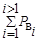
Qу - собственный вес крепи устья, кН (тс).
3.22. Расчетное горизонтальное (радиальное) давление пород Рп, кПа (тс/м2), на крепь устья ствола в малосвязных и глинистых породах наносов следует определять по формуле
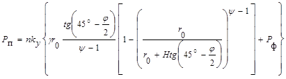
где n - коэффициент перегрузки, равный 1,3;
kу - коэффициент, принимаемый равным 1,7 при расстоянии от проемов в крепи более 20 м и 2,9 - при расстоянии менее 20 м;
r0- радиус ствола в свету, м;
j - угол внутреннего трения наносов, град;
y - безразмерный коэффициент, определяемый из выражения
y = 2tg j tg(45°+);
H - глубина рассматриваемого участка от поверхности, м;
Рф - наибольшая суммарная дополнительная нагрузка от зданий и сооружений, расположенных на поверхности вблизи ствола, кПа (тс/м2), определяемая согласно прил. 1;
g - удельный вес породы (грунта), кН/м3 (тс/м2), определяемый из выражения
g = rmg;
rm - средняя плотность пород (грунта), т/м3;
g - ускорение силы тяжести, м/с2 (вводится только для единиц СИ).
Допускается вести расчет нагрузок на крепь, назначать тип и параметры крепи устья ствола согласно главе СНиП по проектированию сооружений промышленных предприятий (в части опускных колодцев).
3.23. Выбор типа и расчет параметров крепи для протяженной части ствола, а также участков сопряжения следует производить на основании определения категорий устойчивости пород вертикальных выработок согласно табл. 2.
Таблица 2
|
Оценка состояния устойчивости пород |
Критерий устойчивости пород вертикальной выработки С |
|
|
I |
Устойчивое |
До 3 |
|
II |
Среднеустойчивое |
От 3 до 6 |
|
III |
Неустойчивое |
От 6 до 10 |
|
IV |
Очень неустойчивое |
Более 10 |
|
Примечание. При Rc £ 2 МПа породы относятся к IV категории устойчивости. |
||
3.24. Величину критерия устойчивости пород вертикальной выработки С следует определять по формуле
где kp - коэффициент, учитывающий взвешивающее действие воды: для участков вне водоносных горизонтов kг равен 1, для пород водоносного горизонта kг определяется по формуле
h1 - высота толщи пород от почвы водоупора до земной поверхности, м;
h2 - высота толщи пород от рассматриваемого сечения в водоносном горизонте до почвы водоупора (до кровли водоносного горизонта), м;
gп, gв - соответственно, удельный вес частиц пород водоносного горизонта и удельный вес воды, кН/м3 (тс/м3);
e - коэффициент пористости пород водоносного горизонта, принимаемый как отношение объема пор к объему скелета и определяемый по данным гидрогеологических изысканий;
Н - высота толщи пород от рассматриваемого сечения до земной поверхности, м;
Рв - давление подземных вод с учетом водопонижения, кПа (тс/м2);
kсб - коэффициент воздействия на ствол других выработок: для протяженных участков ствола kсб равен 1; для сопряжений kсб равен 1,5;
kц - коэффициент воздействия на ствол очистных работ: для участков, не испытывающих воздействий kц равен 1; при воздействии очистных работ kц принимается по данным специализированных организаций;
ka - коэффициент влияния угла залегания пород a град: для горизонтально залегающих пород ka равен 1, в остальных случаях ka следует принимать из выражения
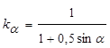
kt - коэффициент влияния времени эксплуатации проектируемой выработки: для шахтных стволов kt равен 1; для остальных выработок - 0,9,
Нр, Rс, g - обозначения те же, что и в формулах (1), (2) и (6).
Примечание: При размерности Rс в кгс/см2 в формулу (7) вместо Rс следует подставлять 0,1 Rс.
3.25. На протяженных участках ствола с жесткой армировкой, а также для участков сопряжений ствола в породах I, II и III категорий устойчивости при отсутствии воздействия очистных работ, других выработок и водопонижения следует применять, как правило, монолитную бетонную крепь; при этом:
в породах I категории устойчивости толщина бетонной крепи принимается без расчета по табл. 3.
в породах II и III категорий устойчивости толщину бетонной крепи следует устанавливать расчетом согласно требованиям п. 3.34 настоящих норм, но не менее величин, указанных в табл. 3.
Таблица 3
|
Толщина бетонной крепи, мм при углах залегания пород, град |
||
|
до 35° |
более 35° |
|
|
До 500 |
200 |
250 |
|
Более 500 |
250 |
300 |
При соответствующем обосновании допускается в стволах с жесткой армировкой, пройденных в породах I категории устойчивости, назначать крепи и их параметры, определяемые по п. 3.26 настоящих норм.
Если расчетная толщина монолитное бетонной крепи превышает 500 мм, то следует применять бетон более высокой марки или другой тип крепи.
3.26. В стволах с гибкой армировкой, а также в вентиляционных стволах и шурфах, не оборудованных подъемными установками, в восстающих выработках и рудоспусках при отсутствии влияния очистных работ и водопонижения, где притоки воды не более 8 м3/ч, в породах I и II категорий устойчивости следует применять набрызгбетонную крепь либо комбинированную крепь из анкеров, металлической сетки и набрызгбетона; при притоках воды более 8 м3/ч в породах I, II и III категорий устойчивости следует применять монолитную бетонную крепь. При этом:
в породах I категории устойчивости толщина набрызгбетонной крепи на протяженных участках ствола принимается без расчета по табл. 4
Таблица 4
|
Толщина набрызгбетонной крепи, мм, при углах залегания пород, град |
||
|
до 35 |
более 35 |
|
|
До 500 |
80 |
120 |
|
Более 500 |
100 |
150 |
в породах I категории устойчивости для участков сопряжений ствола, а также в породах II категории устойчивости на протяженных участках ствола толщину набрызгбетонной крепи следует устанавливать расчетом согласно требованиям п. 3.34 настоящих норм. При этом толщина набрызгбетонной крепи должна быть не менее 150 мм на глубинах до 500 м ч 200 мм на глубинах более 500 м.
В комбинированной крепи длину анкеров lа следует принимать равной 2 м; расстояние между анкерами 0,7 lа. При соответствующем обосновании допускается изменять длину анкеров и расстояния между ними.
3.27. В породах IV категории устойчивости, на участках ствола с напорными водами, а также на калийных и подобных им месторождениях следует применять тюбинговую, железобетонную, многослойную крепь, а при достаточной устойчивости пород - монолитную бетонную крепь.
3.28. Расчет крепи протяженной части стволов и шурфов следует производить на суммарное действие горизонтального (радиального) давления пород массива Рп и давления остаточного напора подземных вод Рг с учетом технологической и монтажной нагрузок.
Общее давление надлежит определять на момент времени, когда оно является наибольшим.
3.29. Расчётное горизонтальное (радиальное) давление пород Рп, кПа (тс/м2), на крепь протяженной части вертикальной выработка при отсутствии влияния горизонтальных деформаций от воздействия очистных работ следует определять по формуле
Рп = пmупнРн[1 + 0,1(r0 - 3)], (9)
где r0 - радиус выработки в свету, м;
п - коэффициент перегрузки, равный 1,3;
my - коэффициент условий работы, принимаемый по табл. 5.
Таблица 5
|
Коэффициент условий работы my |
|
|
Набрызгбетонная |
0,50 |
|
Сборная |
0,75 |
|
Монолитная |
0,80 |
пн - коэффициент приведения к расчетному (максимальному) давлению при неравномерной эпюре нагрузок, принимаемый по табл. 6.
Таблица 6
|
Угол залегания пород, a, град |
Коэффициент пн |
|
|
при последовательной и параллельной схемах проходки |
при совмещенной схеме проходки |
|
|
До 10 |
2,00 |
1,75 |
|
От 10 до 35 |
2,50 |
2,00 |
|
Более 35 |
2,75 |
2,25 |
Pн - нормативное давление на крепь, кПа (тс/м2), определяемое для пород I, II и III категории устойчивости по формулам:
при С £ 6Рн = 10[(2С - 1) + D], (10)
при 10 ³ С > 6Рн = 10[(3С - 7)+D], (11)
где C - критерий устойчивости вертикальных выработок, рассчитываемый по формуле (7);
D - параметр, учитывающий технологию проходческих работ, принимаемый равным: при последовательной и параллельной технологических схемах - нулю; при совмещенной технологической схеме проходки с передвижной опалубкой при С £ 6 D равно 2 и при 10 ³ С > 6 D равно 3.
Примечания: 1. Нормативное давление на крепь Рн для пород IV категории устойчивости определяется по методикам специализированных организаций.
2. В формулах (10) и (11) множитель 10 вводится при единицах СИ.
3.30. Расчетное горизонтальное давление пород Рп на крепь вертикальной выработки в районе сопряжения на протяжении 20 м вверх и 20 м вниз от сопряжения следует определять по формуле (9) настоящих норм, принимая в ней вместо величин пн и Рн величины пнс и Рсн рассчитываемые по формулам:
пнс = пн +(20 - z)x, (12)
Рcн = Рн(1,5 - 0,025z). (13)
где z - расстояния от узла сопряжения до рассматриваемого сечения в районе 20 м;
х - коэффициент перехода от протяженного участка к району сопряжения, принимаемый по табл. 7.
Таблица 7
|
Угол залегания пород a, град |
Коэффициент х |
|
|
при последовательной и параллельной схемах проходки |
при совмещенной схеме проходки |
|
|
До 10 |
0,050 |
0,037 |
|
Более 10 |
0,025 |
0,025 |
3.31. В местах пересечения ранее выработанных пространств на удалении до 6m в кровлю и до 2m в почву (где m - мощность пласта) величина нормативного давления Ppн, кПа (тс/м2), на крепь определяется по формуле
Ррн = 0,66Рн + 100, (14)
где Рн - нормативное давление, определяемое по формулам (10) или (11);
100 - слагаемое в единицах СИ; при единицах давления в тс/м2 слагаемое следует принимать равным 10.
3.32. При проектировании сопряжений ствола с горизонтальными выработками и камерами для исключения их влияния на ствол необходимо:
околоствольные выработки в породах II категории устойчивости на протяжении от ствола не менее 30 м, а в породах III и IV категории - не менее 50 м крепить жесткой крепью; в породах I категории тип крепи не регламентируется;
погашаемые околоствольные выработки в породах I и II категорий устойчивости на протяжении от ствола до 10 м, а в породах III и IV категорий устойчивости до 30 м закладывать кусковатой породой с тампонажным раствором.
3.33. Давление подземных вод Рг, кПа (тс/м2), на крепь выработки в коренных породах без их тампонажа следует определять по формуле (15), а при наличии тампонажа пород по формуле (16)
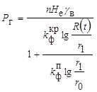
где п - коэффициент перегрузки, принимаемый равным 1,1;
Не - естественный или сниженный общим водопонижением напор в данном водоносном горизонте, определяемый по результатам гидрогеологических исследований, м;
kфкр - коэффициент фильтрации крепи (для бетонной крепи kфкр = 0,00158 м/сут);
kфп, kфт - соответственно коэффициенты фильтрации породы и затампонированной зоны, определяемые по данным гидрогеологических исследований, м/сут;
r1, r0, rт - соответственно внешний, внутренний радиус крепи и радиус затампонированной зоны, м; при неизвестном r1 в расчете следует принимать для первого приближения толщину бетонной крепи r1 - r0, равной 0,5 м с последующим уточнением толщины крепи;
R(t) - радиус влияния дренажа выработки, определяемый по
данным гидрогеологических изысканий из выражения R(t)
= 1,5 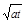
а - коэффициент пьезопроводности водоносного горизонта, м2/сут;
t - время от начала дренирования, сут;
gв - обозначение то же, что в формуле (8).
В тех случаях, когда по расчетам Рг более Рн, в формулах (15) и (16) необходимо учитывать корректировку времени, принимая t соответствующим моменту на 2 мес. после введения крепи в работу.
Если 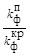
Рг = Неgв.
При расчете горизонтального давления обводненных пород в формуле (9) вместо коэффициента пн следует принимать коэффициент пнг, определяемый по формуле
3.34. Расчет толщины монолитной бетонной и набрызгбетонной крепи вертикальной выработки dк, мм, следует производить по формуле
где r0 - радиус вертикальной выработки в свету, мм;
mу - коэффициент условий работы крепи, принимаемый равным 1,25;
mб1, mб3, mб7 - соответственно коэффициенты, учитывающие длительную нагрузку, условие для нарастания прочности и температурные колебания, принимаемые в соответствии с главой СНиП по проектированию бетонных и железобетонных конструкций;
Rпp - расчетное сопротивление бетона сжатию, принимаемое в соответствии с главой СНиП по проектированию бетонных и железобетонных конструкций, кПа (тс/м2);
kp - коэффициент концентрации напряжении в конструкции крепи, принимаемый равным 1 на протяженных участках ствола и равным (2 - 0,05 z) в районе сопряжения, где z - расстояние от узла сопряжения до рассматриваемого сечения, м;
Р - горизонтальное давление, кПа (тc/м2), определяемое как суммарное от давления пород Рп и подземных вод Рг;
dпб - толщина породобетонной оболочки, образующейся за счет проникновения бетона в окружающие нарушенные породы: для набрызгбетона принимаемая равной 50 мм, для остальных типов крепи - равной нулю.
3.35. В вертикальных выработках, находящихся в зонах воздействия очистных работ и других выработок, а также водопонижения при величинах ожидаемых относительных деформаций пород вблизи выработки, превышающих их допускаемые значения для крепи, указанные в табл. 8, в породах всех категорий устойчивости следует применять конструктивные элементы защиты или конструкции крепи, приспособленные к принудительному деформированию совместно с массивом пород.
Таблица 8
|
Допускаемые относительные вертикальные деформации, мм/м |
||
|
при сжатии |
при растяжении |
|
|
Монолитная |
0,85 |
По несущей способности 0,05 |
|
Монолитная |
0,85 |
По раскрытию трещин 0,25 |
|
Сборная |
2,00 |
1,00 |
3.36. Конструктивные элементы защиты крепи ствола следует назначать на основе расчета ожидаемых относительных деформаций пород околоствольного массива и с учетом необходимой степени гидроизоляции ствола. При этом, если:
деформации растяжения пород превышают значения, указанные в табл. 8, то следует предусматривать горизонтальные разрезные швы на расстояниях не более 15 м друг от друга, преимущественно на пересечении наиболее слабых слоев пород;
деформации сжатия пород находятся в интервале от указанных в табл. 8 до 15 мм/м, то следует предусматривать горизонтальные осадочные швы (узлы вертикальной податливости) в местах наибольших деформаций и на контактах прочных и слабых пород или меры по обеспечению проскальзывания крепи на защищаемом участке;
деформации сжатия пород превышают 15 мм/м, то следует предусматривать осадочные зоны и узлы вертикальной податливости;
проявляются горизонтальные деформации, то следует предусматривать повышение несущей способности и податливые конструкции, обоснованные расчетом.
3.37. Для компенсации вертикальных деформаций сжатия осадочными швами максимальное расстояние между ними в вертикальной выработке устанавливается расчетом согласно требованиям настоящих норм, но не более 20 м. Осадочные швы выполняются из податливого материала, а при необходимости гидро- и газоизоляции в них устанавливаются специальные герметичные узлы податливости,
Максимальное расстояние 1, м, между осадочными швами определяется по формуле
где D1 - диаметр выработки в проходке (вчерне), м;
D0 - диаметр выработки в свету, м;
fтр - коэффициент трения породы о крепь, принимаемый: 0,6 для изверженных пород, песчаников и известняков; 0,5 - для алевролитов и аргиллитов и 0,4 для углей и соляных пород;
Rпр, Рп, mб1, mб3, mб7 - обозначения те же, что и в формулах (9) и (18).
3.38. Расчетная рабочая высота hш, мм, осадочного шва определяется по формуле
где Dhр - разность оседаний на границах защищаемого участка, мм, которая определяется из выражения Dhр = Seimi;
ei - относительные вертикальные деформации в пределах защищаемого участка, мм/м;
mi - мощность слоя, м;
ап - сжимаемость материала прокладок в шве или узле податливости, %, при нагрузках равных допускаемым для материала крепи, принимаемая по результатам испытаний материала.
3.39. При полной компенсации вертикальных и горизонтальных деформаций массива от воздействия очистных работ конструктивными мерами защиты величины расчетных давлении на крепь вертикальной выработки следует определять согласно требованиям настоящих норм без учета воздействия очистных работ.
В случае неполной компенсации проявлений указанных деформаций от воздействия очистных работ или отсутствии конструктивных мер защиты выработки расчет крепи следует производить по ожидаемым перемещениям согласно методикам специализированных организаций.
При этом минимальная величина несущей способности крепи должна приниматься не менее величины расчетного давления на крепь без учета влияния очистных работ.
Примечание. Расчеты давления на крепь, конструктивные элементы защиты крепи вертикальных выработок при скользящих крепях с заполнением закрепного пространства следует производить по методикам специализированных организаций.
3.40. При проектировании горных выработок сумма остаточных водопритоков с водоносных горизонтов не должна превышать допустимого водопритока в ствол, установленного в главе СНиП по правилам производства и приемки работ подземных горных выработок.
Остаточный водоприток в ствол Qост, м3/сут, в результате фильтрации воды через крепь следует определять по формуле
Qост = Wm. (21)
где m - мощность водоносного горизонта, м;
W - фильтрационный расход воды на единицу длины ствола, м2/сут, определяемый по формулам:
в условиях без тампонажа пород
где Не, kфп, kфкр, kфт, r1, r0, rт, R(t) - то же, что и в формулах (15) и (16).
4.1. Выбор места размещения горизонтальной и наклонной выработки необходимо проводить с учетом общих компоновочных решений. При этом, как правило, следует:
располагать главные вскрывающие выработки в устойчивых породах, а при их отсутствии - вкрест простирания слоистости или трещиноватости пород, а также на расстояниях, исключающих взаимное влияние выработок;
избегать расположения выработок в зонах крупных тектонических нарушений и напорных водоносных горизонтов;
предусматривать возможность выемки полезного ископаемого из предохранительных целиков при погашении выработок;
предусматривать минимальное количество типоразмеров сечений выработок околоствольных дворов и сопряжений.
4.2. Форму поперечного сечения выработки следует выбирать в зависимости от устойчивости пород, срока службы и назначения выработки. В устойчивых породах, как правило, следует принимать выработку сводчатой формы с вертикальными стенками; при неустойчивых породах почвы - круглой или эллиптической формы.
4.3. Охрану выработок околоствольного двора и главных магистральных выработок, как правило, следует осуществлять с помощью предохранительных целиков, исключающих воздействие очистных работ.
В выработках, испытывающих воздействие очистных работ, следует предусматривать конструктивные меры защиты крепи.
Горизонтальные и наклонные выработки, как правило, должны располагаться на расстояниях Lд, исключающих их взаимное влияние и определяемых по формуле
Lд ³(b1 + b2)kL, (24)
где b1 + b2 - суммарная ширина взаимовлияющих выработок в проходке (вчерне), м;
kL - коэффициент, определяемый по табл. 11.
4.4. В крепи устьев штолен и наклонных стволов следует предусматривать проемы для ввода и вывода трубопроводов и электрокабелей, а также для примыкания вентиляционных или калориферных каналов. В сопряжениях каналов с устьями наклонных стволов должны устраиваться предохранительные ограждения.
Для укрепления лобовых откосов, отвода поверхностных вод и оформления выходов в устьях штолен и наклонных стволов необходимо предусматривать устройство порталов, которые следует проектировать из бетона, бутобетона, сборного или монолитного железобетона.
4.5. Водоотливные канавки следует проектировать согласно требованиям ГОСТ 5218-75.
4.6. Грузовые и порожняковые ветви околоствольных дворов у стволов следует проектировать прямолинейными на длину не менее локомотивного состава.
4.7. Для пешеходного сообщения между грузовой и порожняковой ветвями клетевого ствола необходимо предусматривать обходную выработку либо проход под лестничным отделением или через камеру ожидания.
4.8. Проектирование сопряжений выработок следует производить с учетом сечений сопрягаемых выработок и взаимного их влияния, габаритов подвижного состава, типа стрелочных переводов и углов ответвления при соблюдении необходимых проходов, зазоров и уширений.
4.9. Радиусы криволинейных участков сопряжений горизонтальных выработок между собой, а также сопряжений горизонтальных и наклонных выработок следует принимать с учетом применяемого транспортного и проходческого оборудования.
4.10. Величину уширения на закруглениях горизонтальных выработок при локомотивной откатке следует принимать с наружной стороны кривой не менее 300 мм, с внутренней стороны кривой - не менее 100 мм. При этом расстояние между осями рельсовых, путей следует увеличивать по сравнению с междупутьем на прямолинейных участках не менее чем на 300 мм.
4.11. Горизонтальные и наклонные выработки необходимо проектировать с учетом обеспечения механизированной доставки людей. На путях следования средств доставки людей следует предусматривать посадочные площадки.
4.12. Выбор типа и расчет параметров крепи горизонтальной и наклонной выработок следует производить в зависимости от категории устойчивости пород с учетом степени воздействия очистных работ и других выработок. В качестве критерия определения категорий устойчивость пород следует принимать величину их смещений U на контуре поперечного сечения выработки за весь срок ее службы без крепи в соответствии с табл. 9
Таблица 9
|
Оценка состояния устойчивости пород |
Смещения U, мм |
|||
|
осадочные породы (песчаники, алевролиты, аргиллиты, известняки, уголь и др.) |
изверженные породы (граниты, диориты, порфириты и др.) |
соляные породы каменная соль, сильвинит, карналит и др.) |
||
|
I |
Устойчивое |
До 50 |
До 20 |
До 200 |
|
II |
Среднеустойчивое |
Свыше 50 до 200 |
Свыше 20 до 100 |
Свыше 200 до 300 |
|
III |
Неустойчивое |
Свыше 200 до 500 |
Свыше 100 до 200 |
Свыше 300 до 500 |
|
IV |
Очень неустойчивое |
Свыше 500 |
Свыше 200 |
Свыше 500 |
Отнесение выработки к той или иной категории устойчивости необходимо производить по абсолютной величине максимальных смещений пород на контуре поперечного сечения, которые определяются дифференцированно в кровле, почве и боках выработки.
4.13. При соответствующем обосновании в утверждаемых министерствами СССР по согласованию с Госстроем СССР ведомственных нормативных документах, учитывающих специфические условия месторождений, многолетний успешный опыт подземного строительства в бассейнах и др., допускается оценку устойчивости пород в горизонтальных и наклонных выработках и выбор крепи производить по величине безразмерного показателя kк, определяемого по формуле
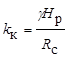
где Нр - расчетная глубина размещения выработки, м, определяемая по формуле (1);
Rc - расчетное сопротивление пород сжатию, кПа (тс/м2), определяемое по формуле (2);
g - удельный вес породы, кН/м3 (тс/м3).
Таблица 10
|
Коэффициенты ka и kq при углах залегания пород a или основных плоскостей трещиноватости, град |
||||||||||||
|
до 20 |
30 |
40 |
50 |
60 |
св. 70 |
|||||||
|
ka |
kq |
ka |
kq |
ka |
kq |
ka |
kq |
ka |
kq |
ka |
kq |
|
|
По простиранию |
1,00 |
0,35 |
0,95 |
0,55 |
0,80 |
0,80 |
0,65 |
1,20 |
0,60 |
1,70 |
0,60 |
2,25 |
|
Вкрест простирания |
0,70 |
0,55 |
0,60 |
0,80 |
0,45 |
0,95 |
0,25 |
0,95 |
0,20 |
0,80 |
0,15 |
0,55 |
|
Под углом к простиранию |
0.85 |
0,45 |
0,80 |
0,65 |
0,65 |
0,90 |
0,45 |
1,05 |
0,35 |
1,10 |
0,35 |
0,95 |
4.14. Величину смещения U для горизонтальных и наклонных выработок, расположенных в осадочных и изверженных породах и вне зоны влияния очистных работ, следует определять по формуле
U = kakqkskвktUт, (26)
где Uт - смещение пород, мм, принятое за типовое, определяемое по графикам рис. 1 в зависимости от расчетного сопротивления пород сжатию Rс и расчетной глубины расположения выработки Нр;
ka - коэффициент влияния угла залегания пород и направления проходки выработки относительно простирания пород или основных плоскостей трещиностойкости, определяемый согласно табл. 10;
kq - коэффициент направления смещения пород: при определении смещений со стороны кровли или почвы (в вертикальном направлении) kq равен 1, при определении боковых смещений пород (в горизонтальном направлении) kq определяется по таблице 10;
ks - коэффициент влияния размера выработки, определяемый по формуле
ks = 0,2 (b - 1), (27)
где b - ширина выработки в проходке (вчерне), м;
kв - коэффициент воздействия других выработок, принимаемый: для одиночных выработок и камер равным 1,0; для сопряжений с односторонним примыканием выработки - 1,4; для сложных сопряжений с примыканием выработок в виде двустороннего заезда или пересекающихся выработок - 1,6; для параллельных выработок - по формуле
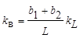
где L - расстояние между выработками, м;
b1 + b2 - суммарная ширина взаимовлияющих выработок в проходке (вчерне), м;
kL - коэффициент, определяемый согласно табл. 11;
kt - коэффициент влияния времени возведения крепи. Для выработок, срок службы t которых более 15 лет, kt равен 1, при t менее 15 лет kt определяется по графикам рис. 2.
Рис. 1. Графики для определения типового смещении пород Uт
Рис. 2. Графики для определения коэффициента kt при t от 1 года до 15 лет
Таблица 11
|
Расчетная глубина расположения выработки от поверхности Нр, м |
коэффициент kL при расчетном сопротивлении Rс, МПа (кгс/см2) |
|||||||
|
для выработок по простиранию |
для выработок вкрест простирания |
|||||||
|
30 (300) |
60 (600) |
90 (900) |
более 120 (1200) |
30 (300) |
60 (600) |
90 (900) |
более 120 (1200) |
|
|
До 300 |
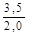 |
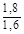 |
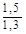 |
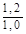 |
1,8 |
1,5 |
1,2 |
1,0 |
|
Свыше 300 до 600 |
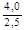 |
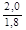 |
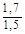 |
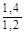 |
2,2 |
1,8 |
1,5 |
1,2 |
|
Свыше 600 до 900 |
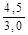 |
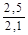 |
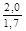 |
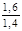 |
2,6 |
2,1 |
1,7 |
1.4 |
|
Свыше 900 до 1200 |
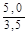 |
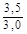 |
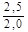 |
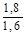 |
3,0 |
2,5 |
2,0 |
1,5 |
|
Свыше 1200 |
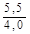 |
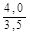 |
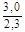 |
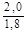 |
3,4 |
2,9 |
2,4 |
1,7 |
|
Примечания: 1. В числителе kL для выработок с a до 35° и в знаменателе - при a свыше 35° 2. kL для наклонных выработок принимается как для горизонтальных, пройденных по простиранию. |
||||||||
Примечание. Определение расчетных смещений пород для выработок, располагаемых в зоне влияния очистных работ, должно производиться по методикам специализированных организаций.
4.15. В выработках, пройденных по простиранию и при углах падения пород a от 20 до 50° кроме смещений в вертикальном и горизонтальном направлениях необходимо определять смещения по нормали к напластованию по формуле
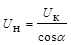
где UК - смещения со стороны кровли выработки, мм.
4.16. Величину смещения U для соляных и подобных им пород следует определять по формуле
U = 500eqb (1 + 0,07t) kв, (30)
где eq - относительные деформации пород за первый год службы выработки, определяемые по графику рис. 3;
b - ширина выработки в проходке (вчерне), м;
t - срок службы выработки, лет;
kв - обозначение то же, что в формуле (26).
4.17. В горизонтальных и наклонных выработках в осадочных (исключая соляные) и изверженных породах, расположенных вне зоны воздействия очистных работ и других выработок, следует применять:
в породах I категории устойчивости - анкерную или набрызгбетонную крепь толщиной не менее 30 мм. В монолитных, малотрещиноватых породах допускается оставление выработок без крепи;
в породах II категории устойчивости - монолитную бетонную крепь, комбинированную из набрызгбетона толщиной не менее 50 мм с анкерами и металлической сеткой или без нее, рамную крепь из железобетонных стоек с металлическими верхняками, сборную тюбинговую, металлическую податливую крепь без обратного свода, анкер-металлическую, металлическую арочную крепь с набрызгбетонным покрытием и тампонажем закрепного пространства;
Рис. 3. График для определения eq
в породах III и IV категорий устойчивости - сборную тюбинговую и блочную, а при соответствующем обосновании металлобетонную, металлическую податливую и анкер-металлическую крепи; при этом в породах почвы I и II категории устойчивости в крепи указанных типов обратный свод не предусматривается.
В осадочных породах почвы III и IV категорий устойчивости и изверженных породах IV категории устойчивости - крепи, как правило, должны быть, с обратным сводом.
В породах III и IV категорий устойчивости допускаются крепи без обратного свода, но с обязательным осуществлением мероприятий по уменьшению смещений почвы путем упрочнения пород цементацией, анкерованием или разгрузкой массив.
Необходимость возведения обратного свода и его параметры определяются на основе расчета смещения пород почвы, податливости забутовки и отпора крепи, а также с учетом времени установки крепи.
4.18. При выборе типа крепи выработок в соляных породах необходимо руководствоваться следующими требованиями:
а) в породах I категории устойчивости при смещении кровли и однородных породах до 200 мм и в слоистых до 150 мм допускается поддержание выработок без крепи. При смещении кровли более указанных пределов необходимо устанавливать анкерную крепь;
б) в однородных породах II категории устойчивости следует применять в кровле анкерную крепь, в слоистых породах необходимо устанавливать крепи поддерживающего типа (податливых, рамные и др.);
в) в породах III и IV категорий устойчивости следует применять податливые крепи или жесткие крепи с податливыми элементами (или слоем), способные компенсировать 70 % расчетных смещений.
4.19. В горизонтальных и наклонных выработках, располагаемых в породах IV категории устойчивости, а также в выработках, испытывающих воздействие очистных работ и других выработок, следует применять крепи, имеющие конструктивную податливость.
4.20. В рамных крепях должны применяться жесткие из сборного железобетона (плоские, кессонные, равного сопротивления) и гибкие (из металлической сетки, стеклотканевого рулонного материала и др.) межрамные ограждения.
4.22. В стальных арочных крепях при породах в почве с Rс менее 15 МПа (150 кгс/см2) под стойками арочной крепи следует предусматривать опоры или прогоны, исключающие вдавливание стоек крепи в почву.
4.23. Податливые элементы любой конструкции крепи выработок, сооружаемых на крутых и наклонных пластах в направлении их простирания, необходимо располагать с учетом ожидаемых максимальных смещений по нормали к напластованию.
4.24. В наклонных выработках, закрепленных рамной или сборной железобетонной крепью, при углах наклона более 30° следует предусматривать усиленную связь с массивом с помощью тампонажа закрепного пространства, прикрепления элементов крепи к массиву анкерами, опорными венцами и других мер усиления связи крепи с массивом горных пород.
4.25. На сопряжениях горизонтальных выработок следует предусматривать бетонные опоры с минимальными размерами: по длине - 2000 мм, а по ширине со стороны угла сопряжения - 500 мм.
4.26. При проектировании крепи для пород I категории устойчивости горизонтальных и наклонных выработок параметры крепи допускается принимать без расчета.
Выбор и расчет конструктивных параметров крепи выработок для пород II, III и IV категорий устойчивости должен производиться на основе расчета ожидаемых смещений пород и нагрузок на крепь с учетом технологии проведения выработки и возведения крепи.
4.27. Расчетная нагрузка на все виды крепи, за исключением рамных податливых, определяется дифференцировано в кровле и почве (в вертикальном направлении), в боках (в горизонтальном направлении), а при угле падения пород a от 20 до 50° и по нормали к напластованию по формуле
Р = kпkнmвРн, (31)
где Рн - нормативная нагрузки на крепь, определяемая с учетом пп. 4.14- 4.16 и 4.28 настоящих норм, кПа (тс/м2);
kп - коэффициент перегрузки, принимаемый по табл. 12;
kн - коэффициент, принимаемый для главных вскрывающих выработок равным - 1,1; для остальных - 1;
mв - коэффициент условий проведения выработок, принимаемый равным при буровзрывном способе, а при комбайновом способе проведения выработок принимаемый по табл.13.
Примечание. Расчетная нагрузка на рамные податливые крепи определяется по методикам специализированных организаций.
Таблица 12
|
Величина смещения U, мм |
Коэффициент kп |
|
|
Главные вскрывающие выработки |
Магистральные и другие выработки |
|
|
По 50 |
1,25 |
1,10 |
|
Свыше 50 до 200 |
1,10 |
1,05 |
|
Свыше 200 до 500 |
1,05 |
1,00 |
|
Свыше 500 |
1,00 |
1,00 |
Таблица 13
|
До 1,6 |
Свыше 1,6 до 2,0 |
Свыше 2,0 до 2,5 |
Свыше 2,5 |
|
|
Коэффициент mв |
0,6 |
0,8 |
0,9 |
1,1 |
4.28. Нормативная нагрузка Pн определяется по графику рис. 4 в зависимости от смещений U с учетом смещений до установки крепи Ut, сжатия забутовочного материала Uз, и конструктивной податливости крепи Uкр.
Смещения, происходящие до установки крепи Ut, определяются по формуле
Ut = Ukt, (32)
где kt - коэффициент влияния времени на смещение пород, определяется по графику рис. 5.
Смещения, компенсируемые за счет сжатия забутовочного материала Uз, зависят от сжимаемости материала, толщины забутовочного слоя и расчетной нагрузки на крепь и определяются опытным путем. Для забутовочного материала из дробленых пород при отсутствии опытных данных Uз допускается принимать равным 25 % толщины забутовочого слоя.
Рис. 4. Графики для определения нормативной нагрузки на крепь
Рис. 5. Графики для определения коэффициента kt при t менее 1 года
Конструктивная податливость крепи Uкр принимается по ее технической характеристике. Для монолитных бетонных и железобетонных типов крепи при определении конструктивной податливости Uкр следует учитывать величину усадки и ползучесть бетона при твердении, которую следует принимать: для однопутевых выработок равной 20 мм, для двухпутевых - 40 мм.
5.1. Расположение камеры главной водоотливной установки надлежит предусматривать, как правило, в блоке с камерой центральной подземной электроподстанции.
В камерах водоотливных установок надлежит предусматривать, средства вспомогательного транспорта, а также грузоподъемные приспособления для доставки и монтажа оборудования.
В случае применения рельсового транспорта головки рельсов должны быть расположены заподлицо с полом камеры.
При определении размеров камер следует также учитывать размещение необходимых средств автоматизации и грузоподъемных механизмов.
В камерах водосливных установок расстояние от наиболее выкупающих частей насосного агрегата до ближайшей стены камеры необходимо предусматривать:
по длине камеры со стороны водотрубного ходка - не менее ширины водотрубного ходка, а с противоположной стороны - не менее длины платформы для перевозки оборудования и зазора 400 м: при отсутствии наклонного водотрубного ходка и поворотной платформы - зазора по 1000 мм с обеих сторон камеры;
по ширине камеры - не менее суммарного расстояния, определяемого габаритами оборудования или шириной платформы для перевозки и зазоров по 200 мм до выступающих частей насосных агрегатов и до стенки камеры со стороны рельсового пути и не менее 500 мм от выступающих частей насосного агрегата до противоположной стены.
5.3. Высоту камеры (главных и участковых) водоотливных установок следует определять с учетом:
превышения отметок фундаментов насосных агрегатов над уровнем пола камеры не менее 100 мм;
подъема грузоподъемными средствами оборудования над рельсовой платформой, а в камерах без рельсовых путей - над полом на высоту не менее 150 мм;
зазора не менее 100 мм между грузоподъемными средствами и нагнетательным трубопроводом, располагаемым поверху на высоте не менее 1800 мм;
установки электрооборудования в незаглубленных камерах таким образом, чтобы места, доступные для проникновения воды к токоведущим частям электрооборудования, были на высоте не менее 1000 мм от головок рельсов околоствольного двора (у ствола).
5.4. Камеры главных незаглубленных и заглубленных водоотливных установок надлежит проектировать с двумя выходами (ходками), расположенными в противоположных концах камеры, независимо от блокировки камер главной водоотливной установки и электроподстанции; при этом необходимо предусматривать, чтобы в камерах один из ходков, предназначенный для доставки оборудования транспортными средствами, принятыми на шахте (руднике), соединял камеры с главной откаточной выработкой.
5.5. Поперечные размеры ходков, по которым в камеры доставляется оборудование, следует принимать:
по ширине - с учетом максимальных габаритов доставляемого оборудования и зазоров не менее 200 мм с каждой стороны выработки;
по высоте - исходя из максимальной высоты оборудования и зазора 200 мм до кровли ходка, но не менее 1500 мм для наклонного и 1900 мм для горизонтального ходка.
5.6. Наклонный водотрубный ходок, соединяющий незаглубленную камеру главной водоотливной установки с наклонным стволом, следует располагать, как правило, под углом наклона до 20° к горизонту с таким расчетом, чтобы в месте сопряжения ходка со стволом расстояние по вертикали от уровня пола насосной камеры было не менее 3500 мм.
В заглубленных камерах водоотливных установок углы наклона водотрубных ходков надлежит определять в зависимости от горно-геологических условий. В наклонных ходках должны быть предусмотрены лестницы или сходни (трапы) с перилами.
5.7. В незаглубленных камерах водоотливных установок при числе насосных агрегатов не более трех надлежит предусматривать, как правило, один водозаборный колодец, располагаемый внутри камер.
Конструктивные размеры водозаборного колодца следует принимать из расчета обеспечения полного удаления воды из водосборника при режиме работы насосов, исключающем кавитацию и аэрацию, а также с учетом зазоров не менее 200 мм между сливными задвижками и стенками водозаборного колодца и размещения всасывающих клапанов на расстоянии, равном утроенному диаметру всасывающих труб. При этом глубина водозаборного колодца должна быть не менее 1800 мм (от подошвы водосборника).
Устья колодцев необходимо перекрывать металлическими решетками или рифлеными металлическими листами.
5.8. Поперечное сечение водосборников следует принимать не менее 4,5 м2 в свету при высоте выработки не менее 1900 мм.
Водосборники насосных камер заглубленного типа должны иметь два выхода на откаточные выработки. Один из выходов необходимо устраивать непосредственно над водоприемными клапанами, доступ к которым следует предусматривать по лестницам или скобам.
5.9. Ветви водосборников при наличии осветляющих резервуаров должны иметь уклон 0,001 в сторону насосной камеры, а при чистке водосборников через наклонные ходки - подъем 0,001 в ту же сторону.
5.10. При наличии в шахтной воде абразивных частиц (породы, руды, угля) следует предусматривать осветляющие резервуары с устройствами для их механизированной очистки.
Необходимое количество осветляющих резервуаров должно определяться расчетом. Общее количество осветляющих резервуаров должно быть больше расчетного на один, который находится в чистке или ремонте.
5.11. При наличии на площадке двух стволов следует предусматривать, как правило, одну камеру зумпфового водоотлива в стволе с наибольшей глубиной и с перепуском воды из другого ствола по специальной выработке (скважине).
5.12. В камерах зумпфовых водоотливных установок расстояние от наиболее выступающих частей насосных агрегатов следует принимать по длине до стены камеры 1500 мм, по ширине со стороны прохода - 800 мм и с противоположной стороны - 400 мм, а между насосными агрегатами - 1000 мм.
Высоту камеры зумпфовой установки при плоском перекрытии следует принимать не менее 2200 мм, а при сводчатом перекрытии не менее 1600 мм от пола до пяты свода.
5.13. Нагнетательный трубопровод в камере следует располагать на высоте не менее 1500 мм со стороны, противоположной проходу. При установке в камерах зумпфового водоотлива насосных агрегатов с электроприводом мощностью 100 кВт и более необходимо применять грузоподъемные средства.
5.14. Аппаратуру автоматизации зумпфового водоотлива следует выносить на уровень горизонта околоствольного двора или предусматривать специальное место для ее размещения в камерах.
5.15. Камеры подземных электроподстанций и распределительных пунктов высокого напряжения следует располагать:
центральных подземных подстанций (ЦПП) - в околоствольных дворах, вблизи шахтных стволов с непосредственным примыканием к камере незаглубленной главной водоотливной установки;
распределительных пунктов высокого напряжения (РПП) - в центре расположения высоковольтных потребителей электроэнергии (стационарных и передвижных участковых подстанций);
стационарных участковых подстанций (УПП) - вблизи основных потребителей электроэнергии;
преобразовательных подстанций (ППП) - в околоствольных дворах и на участках шахт.
При соответствующем обосновании допускается расположение указанных камер в других местах.
5.16. В камерах подземных электроподстанций (ЦПП, РПП, УПП и ППП) надлежит предусматривать места для установки аппаратуры автоматизации и грузоподъемных средств.
5.17. Камеру центральной подземной электроподстанции, непосредственно примыкающую к незаглубленной камере главной водоотливной установки, надлежит отделять от последней противопожарной стеной толщиной не менее 200 мм.
В перемычке необходимо предусматривать устройство противопожарной и решетчатой дверей. Двери должны открываться в сторону насосной камеры. Полы камеры ЦПП и камеры главной незаглубленной водоотливной установки должны быть на одном уровне.
При примыкании камеры ЦПП или РПП непосредственно к откаточной выработке в разделяющей их стене надлежит предусматривать монтажные проемы.
5.18. При проектировании электротехнических камер соляных рудников необходимо:
камеры размещать перед перегрузочными и погрузочными пунктами походу свежей струи;
пол подстанции предусматривать на 500 мм выше отметки почвы примыкающей выработки;
предусматривать устройство в центральных подземных подстанциях бетонных полов.
5.19. В камерах подъемных машин и лебедок следует предусматривать два выхода (ходка): один - для канатов, второй - для доставки оборудования и материалов. Сечение этого ходка следует определять исходя из условий транспортировки наиболее крупной детали подъемной машины или лебедки.
Размеры камер надлежит принимать с учетом возможности установки грузоподъемных средств для обслуживания и ремонта оборудования, а также устройства при необходимости стационарных рабочих мест.
5.20. В камерах шкивов с диаметром более 2000 мм следует предусматривать монтажные балки для монтажа и ремонта шкивов. Высота установки монтажной балки должна быть не менее суммы наружного диаметра шкива, минимальной длины монтажного приспособления в стянутом виде со стропами и зазора 100 мм от подшкивных балок.
5.21. Размеры камеры загрузочного устройства должны определяться с учетом размещения подъемно-транспортных приспособлений для монтажа и ремонта оборудования, аспирационно-обеспыливающих устройств и аппаратуры автоматизации телемеханики.
Камера загрузочного устройства должна отделяться от ствола съемными сетками ограждения или железобетонной стенкой с монтажными проемами.
5.22. Для сообщения между площадками в камере загрузочного устройства следует предусматривать лестницы или скобы.
Если для сообщения камеры загрузочного устройства с околоствольным двором предусматривается ходок, то сопряжение его с околоствольным двором необходимо располагать в специальной нише, позволяющей изолировать камеру от околоствольного двора при помощи дверей в нише или над сопряжением - лядами.
5.23. Бункера для полезного ископаемого и породы следует предусматривать, как правило, вертикальными круглого сечения. При аккумулировании угля, слеживающихся руд и породы в наклонном бункере рядом с ним следует предусматривать ходок.
Наклонную часть бункеров следует предусматривать под углом не менее: для угля - 50°, для породы и неслеживающихся руд - 60° и для слеживающихся руд - 70°.
Для предохранения бетонной крепи бункера от разрушений и уменьшения коэффициента трения движущегося материала необходимо предусматривать футеровку трудноистираемыми материалами днища в бункерах для угля, а также днища и стен в бункерах для руд.
5.24. Камеры опрокидывателя и толкателя следует располагать на прямолинейном участке выработки.
5.25. Размеры камер опрокидывателя и толкателя необходимо определять исходя из габаритов оборудования и грузоподъемных приспособлений с учетом размещения аспирационно-обеспыливающих устройств. В камерах с обгонным путем зазор между наиболее выступающей частью опрокидывателя и подвижным составом следует принимать не менее 200 мм.
5.26. В камерах опрокидывателя с перепуском руды помещение пальцевого, секторного затвора или питателя должно быть отделено стенкой, в которой следует предусматривать стальную дверь и монтажный проем для доставки деталей и узлов этого оборудования, перекрываемый съемными щитами.
Для контроля заполнения полезным ископаемым рудоспуска под опрокидывателем должен устанавливаться датчик.
5.27. Для осмотра оборудования, расположенного в подвалах камер, необходимо предусматривать люки в перекрытиях и лестницы для спуска людей. Пол подвала должен иметь уклон не менее 0,002 в направлении к специально предусмотренному приямку или бункеру.
5.28. Камеры дробильной установки должны иметь два выхода (ходка): горизонтальный и наклонный или вертикальный, предназначаемые для доставки оборудования, материалов, прохода людей и прокладки коммуникаций.
В наклонном и вертикальном ходках необходимо предусматривать лестницы с перилами.
5.29. Размеры камер дробильных установок следует определять с учетом грузоподъемных средств. Для осмотра и ремонта кранового оборудования в торце камеры следует иметь ремонтную площадку.
5.30. Размеры камеры пластинчатых питателей следует определять с учетом:
зазора между питателями со стороны привода и крепью не менее 1200 мм;
резервной площадки тупиковой части выработки длиной 2000 мм;
высоты камеры над натяжной и приводной звездочкой питателя не менее 4000 мм;
установки в нишах для электродвигателя грузоподъемных средств.
5.31. Под пластинчатыми питателями следует предусматривать специальные устройства для сбора и удаления просыпающейся мелочи.
5.32. Все монтажные проемы и лазы в камерах дробильных установок должны перекрываться съемными щитами и иметь ограждения.
5.33. Размеры приемных бункеров для недробленой руды необходимо определять: по ширине - количеством одновременно разгружаемых вагонеток, по высоте - углом наклона боковых стенок бункера, который следует принимать не менее 55°.
5.34. К камерам дробильных установок должно примыкать или находиться вблизи них помещение для аппаратуры автоматизации и телемеханики, а также установок аспирации и обеспыливания.
5.35. Депо электровозов следует размещать, как правило, в районе околоствольного двора: для аккумуляторных электровозов - только в отдельных камерах, а для контактных - в отдельных камерах или за счет местного расширения откаточной выработки с ограждением от выработки сплошной несгораемой стеной.
5.36. Депо аккумуляторных электровозов следует предусматривать в составе сблокированных между собой камер: зарядной, преобразовательной подстанции и ремонтной мастерской, в которой необходимо оборудовать стационарные рабочие места.
Допускается размещение ремонтной мастерской на расширении участка заезда в зарядную камеру. При этом дополнительный заезд в ремонтную мастерскую не требуется. Камера должна быть отгорожена от заезда бетонной стеной толщиной не менее 200 мм.
При устройстве и оборудовании преобразовательной подстанции необходимо соблюдать требования «Правил устройства электроустановок» (ПУЭ), утвержденных Минэнерго СССР.
5.37. Депо контактных электровозов следует предусматривать в составе камеры ремонтной мастерской и заезда в нее, используемого для стоянки запасных электровозов.
5.38. Длина зарядных камер должна выбираться с таким расчетом, чтобы зарядные столы располагались в один продольный ряд, при этом расстояние между батареями, расположенными на зарядных столах, следует принимать 1000 мм и свободный проход между крайними зарядными столами и стеной камеры - 2500 мм.
5.39. Ширину зарядных камер следует определять с учетом ширины прохода для людей не менее 700 мм и минимальных зазоров: 600 мм - между батареей на зарядном столе и крепью; 260 мм - между батареей на зарядном столе и электровозом.
Высоту зарядных камер следует принимать с учетом подъема краном батарей над зарядным столом на высоту не менее 150 мм, а общую высоту камеры преобразовательной подстанции не менее 2200 мм.
5.40. Высоту камер ремонтных мастерских для аккумуляторных и контактных электровозов надлежит определять с учетом размещения монтажных балок на высоте не менее 3000 мм, а ширину - с учетом проходов по 700 мм с обеих сторон.
В камерах ремонтных мастерских надлежит предусматривать смотровые ямы шириной не более 1000 мм, глубиной 1650 мм и длиной, равной длине принятию проектом электровоза при одном ремонтном месте и суммарной длины двух электровозов - при двух ремонтных местах.
В одном из концов смотровой ямы по всей ее ширине необходимо предусматривать приямок глубиной 500 мм, в сторону которого пол ямы должен иметь уклон до 0,01. Для спуска в яму людей следует предусматривать бетонную или стальную лестницу или скобы, заделанные в стену.
5.41. При проектировании камер депо аккумуляторных электровозов надлежит предусматривать один заезд в камеру при инвентарном количестве электровозов до 3, два заезда - при инвентарном количестве электровозов до 10 и три заезда - при инвентарном количестве электровозов более 10.
Для камер депо контактных электровозов следует предусматривать один заезд при одном ремонтном месте в камере и два заезда - при наличии двух и более ремонтных мест.
Количество необходимых ремонтных мест следует определять расчетом.
5.42. Заезды в зарядные камеры, а также в депо электровозов следует предусматривать с противопожарными дверями, открывающимися наружу.
В камерах депо электровозов следует предусматривать бетонные полы, а рельсы укладывать заподлицо с полом.
5.43. Камеры для текущего ремонта, чистки и смазки вагонеток следует предусматривать в тех случаях, когда размеры клетей не допускают выдачу на поверхность вагонеток, используемых для откатки полезного ископаемого и породы.
Во всех остальных случаях следует предусматривать камеру только для смазки вагонеток.
Камеры должны. закрепляться несгораемой крепью и иметь противопожарные двери.
5.44. Длину камер для текущего ремонта, чистки и смазки вагонеток надлежит определять с учетом минимальных зазоров: 1500 мм - между вагонетками и станочным оборудованием, 1200 мм - между вагонеткой и дверью, 700 мм - между двумя вагонетками.
Длина отделения, предназначенного для станочного оборудования, должна быть не менее 3000 мм.
Ширину камер для текущего ремонта, чистки и смазки вагонеток надлежит определять в зависимости от предусмотренного в камере количества рельсовых путей и зазоров между вагонеткой и крепью по 500 мм с каждой стороны.
5.45. Гараж должен обеспечивать стоянку всего списочного состава парка за исключением машин, находящихся в ремонте.
5.46. Ремонтную мастерскую следует предусматривать в случае отсутствия возможности доставки оборудования на поверхность без разборки его на основные узлы. Допускается расположение ремонтной мастерской в одной выработке с гаражом при условии их разделения несгораемой стенкой с противопожарными дверями и наличия независимых выходов.
5.47. Размеры камер гаража и ремонтной мастерской следует определять с учетом габаритов обслуживаемых машин, необходимых проходов для людей между машинами и возможности маневров при въезде и выезде машины, имеющей наибольший радиус поворота, а также с учетом устройства стационарных рабочих мест.
Высоту камер следует определять с учетом высоты размещаемых грузоподъемных средств.
5.48. Подземные склады горюче-смазочных материалов (ГСМ) следует размещать в обособленных камерах, имеющих не менее двух отдельных выходов в прилегающие выработки. Выходы должны быть расположены в наиболее удаленных друг от друга частях камеры, каждый выход оборудуется противопожарным поясом с двумя металлическими дверями.
5.49. В складах ГСМ почва камеры должна быть ниже уровня почвы прилегающих выработок или перед выходом из камеры должен быть устроен бетонный вал. Заглубление или вал должны быть такими, чтобы исключалась возможность растекания горюче-смазочных материалов за пределы складов в случае, если вся жидкость вытечет из сосудов, в которых она хранится. Толщина вала должна быть равна его высоте, но не менее 500 мм.
5.50. В гараже, ремонтной мастерской и складе ГСМ следует предусматривать бетонные полы.
5.51. Склад ГСМ должен быть расположен не ближе 100 м от других пунктов обслуживания, расстояние между которыми должно быть не менее 30 м.
5.52. Депо противопожарного поезда следует проектировать в районе околоствольного двора на каждом действующем горизонте в отдельной выработке или в месте расширения откаточной выработки.
В составе депо противопожарного поезда следует предусматривать склад противопожарных материалов, оборудования и инструментов.
В составе указанного депо необходимо также предусматривать:
отсеки для хранения противопожарного оборудования, материалов и инструментов;
место вдоль отсеков для стоянки поезда с противопожарным оборудованием, материалами и инструментами;
решетчатую входную дверь.
5.53. Зазор между противопожарным поездом и отсеками для материалов и оборудования должен быть не менее 700 мм при электровозном транспорте и не менее 1000 мм при самоходном нерельсовом транспорте. Ширину отсеков для хранения противопожарных материалов, оборудования и инструментов следует принимать не менее 900 мм.
5.54. Длину депо следует определять по суммарной длине сопряжения его со штреком, длине состава противопожарного поезда и зазора 1000 мм по длине депо. Высота депо от головок рельсов должна быть не менее 1900 мм.
5.55. Взаимное расположение и блокировку камер для устройства кондиционирования шахтного воздуха надлежит принимать исходя из схемы кондиционирования шахтного воздуха, удобства обслуживания камер и наиболее экономичной привязки их к выработкам околоствольного двора.
5.56. Камеры подземных холодильных машин и высоконапорных теплообменников должны проектироваться в соответствии с требованиями «Правил устройства электроустановок» (ПУЭ), утвержденных Минэнерго СССР.
Ширина главного прохода, предназначенного для обслуживания компрессора холодильных машин, должна быть не менее 1500 мм.
Размеры камер следует определять с учетом подъемно-транспортного оборудования и места для ремонтно-слесарного оборудования.
В камерах следует предусматривать рельсовый путь принятой для шахты колеи. Головки рельсов при этом должны быть на уровне или ниже пола камеры.
В камерах необходимо предусматривать непылящие бетонные полы и водоотливные канавки с уклоном в сторону стока шахтной воды.
5.57. Камеры подземных холодильных машин должны проветриваться обособленной струей свежего воздуха.
5.58. Камеры насосных установок хладоносителя, вторичного хладоносителя, конденсаторной воды с ходками следует проектировать в соответствии с требованиями пп. 5.2, 5.3, 5.5 настоящих норм. Допускается расположение насосов в два ряда.
5.59. При давлении в трубопроводах более 6,4 МПа (64 кг/см2) их следует прокладывать от ствола до камеры теплообменников по специальным ходкам.
5.60. При необходимости следует предусматривать устройство подземных камер мастерских-кладовых для горного оборудования.
Место расположения, количество камер и их размеры определяются проектом в зависимости от назначения камер и габаритов размещаемого в них оборудования и материалов.
5.61. Камеры для водонепроницаемых перемычек должны сооружаться в нетрещиноватых устойчивых породах. На протяжении не менее 15 м в каждую сторону от места сооружения перемычки не должно быть тектонических нарушений, разломов, трещин и карстовых пустот.
5.62. При проектировании водонепроницаемых перемычек на давление свыше 0,2 МПа (2 кгс/см2) следует предусматривать необходимость проведения их испытания.
5.63. Камера оператора (диспетчера) в подземных выработках должна располагаться с учетом удобства контроля и управления автоматизированными установками, а также простоты обслуживания и ремонта аппаратуры.
В зависимости от аппаратурного решения диспетчеризации рудника камера оператора должна состоять из одного и более помещений: операторной, аппаратной и мастерской. Высоту камеры следует принимать не менее 2200 мм.
5.64. Камеру ожидания надлежит размещать вблизи шахтного ствола, по которому предусмотрен спуск-подъем людей.
Для независимого сообщения камеры ожидания с каждой ветвью околоствольного двора следует предусматривать два выхода из камеры, поперечные размеры которых должны быть не менее по ширине - 1500 мм, а по высоте - 2200 мм.
5.65. В камере ожидания должны быть предусмотрены скамьи шириной 450 мм, расположенные в два или четыре ряда с проходами между ними равными 800 мм.
Площадь поля камеры ожидания следует определять исходя из нормативной площади на одного человека, равной 0,5 м2.
Пол и стены камеры должны быть покрыты теплоизолирующими материалами.
5.66. На предприятиях по добыче полезных ископаемых, на которых отраслевыми нормативными документами предусматривается подземный медицинский пункт, следует вблизи камеры ожидания людей размещать камеру медицинского пункта.
Камера должна состоять из приемно-регистрационного и перевязочного помещений, разделенных между собой перегородкой с проемом для двери, и иметь размер в плане не менее 4000´7000 мм.
Камера медицинского пункта должна соединяться с околоствольным двором двумя ходками шириной не менее 1500 мм и высотой 2200 мм, в которых необходимо предусматривать открывающиеся наружу двери с вентиляционными окнами.
В камерах ожидания и медицинского пункта надлежит предусматривать бетонные полы.
5.67. В выработках следует предусматривать камеры для размещения оборудования ассенизации в соответствии с «Правилами безопасности в угольных и сланцевых шахтах», утвержденных Госгортехнадзором СССР и Минуглепромом СССР по согласованию с Госстроем СССР.
5.68. Выбор типа и параметров крепи камер должен производиться на основании результатов определения категории устойчивости пород горизонтальных и наклонных выработок, расчета смещений пород на контуре поперечного сечения камер в соответствии с пп. 4.12-4.28 настоящих норм и следующих требований:
а) крепь выработок, примыкающих к камерам на расстоянии не менее удвоенной ширины выработки (но не менее 5 м), а также против самой камеры, должна иметь деформационные характеристики, близкие с деформационными характеристиками крепи камеры;
б) крепь камер, сооружаемых в породах, склонных к размоканию и набуханию, в которых при эксплуатации находятся шахтные воды (водосборники, осветляющие резервуары и т. п.), должна выполняться с гидроизоляцией или рассчитываться с учетом снижения прочности пород и дополнительных нагрузок на крепь за счет набухания пород;
в) при расположении складов взрывчатых материалов (ВМ) и камер электрооборудования в обводненных породах следует предусматривать специальные мероприятия по гидроизоляции крепи;
г) в камерах, примыкающих к стволам, балки металлоконструкций под оборудование и для грузоподъемных средств не должны стыковаться с армировкой стволов;
д) крепление балок перекрытий под оборудование и подъемно-транспортные приспособления в камерах должно проектироваться так, чтобы исключалось непосредственное воздействие на балки деформаций, возникающих в результате смещений пород.
Рис. 6. Графики для определения коэффициента kсп
Lк - длина камеры; вк - ширина камеры, I, II, III, IV - категории устойчивости пород
5.69. Расчет нагрузок на крепь камер Рк следует производить:
для протяженных камер (при отношении длины камеры к ее ширине более 5) по п. 4.27 настоящих норм:
для камер ограниченной длины по формуле
Рк = kспkвкР, (33)
где Р - расчетная нагрузка на крепь выработки, определяемая по формуле (31);
kсп - коэффициент снижении нагрузок на крепь камер, определяемый в зависимости от категории устойчивости пород по рис. 6;
kвк - коэффициент влияния выработок, примыкающих к длинной стороне камеры, определяется в зависимости от соотношения пролетов камеры (вк) и примыкающей выработки (вв) по табл. 14.
Таблица 14
|
1 |
2 |
3 |
4 |
||
|
Коэффициент kвк |
При одностороннем примыкании выработки |
1,4 |
1,2 |
1,1 |
1,05 |
|
При двустороннем примыкании выработок |
1,6 |
1,3 |
1,15 |
1,1 |
|
|
Примечание. Коэффициент kâê равен 1, если примыкающие выработки расположены с торцов камеры. |
|||||
1. Наибольшая суммарная дополнительная нагрузка Рф определяется графически как максимальная при суммировании эпюр пригрузок от каждого из зданий (сооружений), расположенных на поверхности с одной стороны от ствола на расстоянии от его контура не более 5r0 (r0 - радиус ствола в свету, м).
Пригрузки от зданий (сооружений), отстоящих от контура ствола на расстоянии более 5 r0, не учитываются ввиду их малой значимости.
2. Эпюра пригрузки от каждого здания (сооружения) строится исходя из величины наибольшего значения этой пригрузки Рфi, кПа (тс/м2), определяемой по формуле
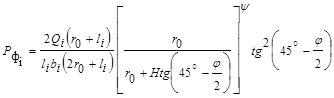
где Qi - вес здания (сооружения), кН (тс);
r0 - радиус ствола в свету, м;
li - расстояние от контура сечения ствола до наиболее удаленной точки здания (сооружения), м;
bi - тангенциальный размер (по ширине) здания (сооружения), м;
Н - глубина рассматриваемого участка ствола от поверхности, м;
y - безразмерный коэффициент, определяемый из выражения
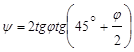
j - угол внутреннего трения пород, град.
3. Максимальная пригрузка от группы зданий (сооружений) определяется по формуле
Рф макс = Рф1cos2q + Рф2cos2(q - q2) + ... + Рфncos2(q - qn), (2)
где Рф1,2..n - пригрузка от здания (сооружения), кПа (тс/м2), определяемая по формуле (1);
q - угол (см. рисунок), заключенный между радиусом, проходящим через центр тяжести здания (сооружения) № 1, и линией приложения максимальной суммарной нагрузки, град, определяемый по формуле
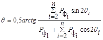
где qi - угол, заключенный между радиусами, проходящими через центры тяжести зданий (сооружений) № 1 и № i, град.
Начало отсчета угла qi помещается по радиусу, проходящему через центр тяжести здания (сооружения) № 1, условно принятого расположенным внизу генплана с последующей нумерацией зданий (сооружений) по вертикали.
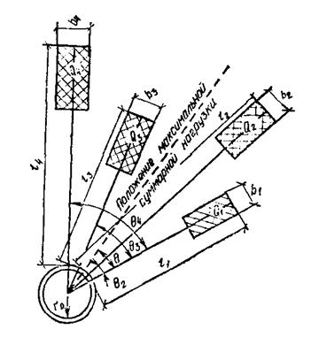
Схема к расчету пригрузок от зданий (сооружений), расположенных на поверхности вблизи ствола
СОДЕРЖАНИЕ